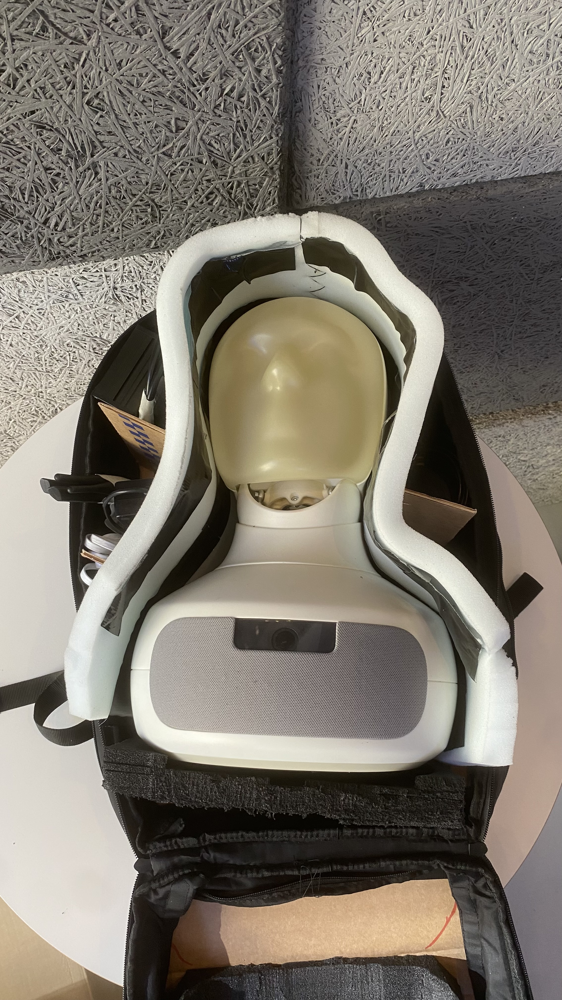

The Furpack
A purpose-built transport backpack developed through mockups, sewn prototypes and supplier samples.
- Project period
- 07/2025 – 04/2026
- Context
- Prototyping & Concepting team, Furhat Robotics
- Status
- Waiting for production
- My contribution
- Project lead until handover to Lucas, colaborative design with Jonathan
In collaboration with: Jonathan Majberger Lutz ↗ Lucas Gustavsson ↗
Physical prototypes, supplier samples and revision packs. The documented handover still required a manufacturer decision.

Context and my role
I worked with the Furhat prototyping team to develop Furpack from scratch. Interviews with three colleagues highlighted the bulk of existing transport cases, difficulty carrying a setup alone, and the need to keep equipment together while protecting a fragile robot face.
We designed around Furhat, its power supply and cables, an external microphone, a laptop and charger, with provision for a router or battery. Independent power and internet access were setup requirements. The backpack itself was not demonstrated to supply them.
Use different prototypes to answer different questions
A paper-and-tape mockup explored the contour, lids, pockets and zipper paths. A modified off-the-shelf backpack tested fitted padding and neck, face and body support. The first custom sewn version used curtain fabric, cardboard padding and simple zippers.
The sewn version could contain and transport the robot, and loading and closing worked qualitatively. Its zippers and padding needed improvement. At 420 × 300 × 265 mm (H × W × D), padding pushed its depth beyond the target of less than 250 mm. An externally made second sewn prototype improved the form but remained bulky and lacked the intended reinforcement.


Revise loading, support and carrying
The robot’s forehead could catch during loading or removal. The next techpack requested a compartment widening towards the opening, paired with head and neck support and retention for the robot and removable mask.
Other requests addressed shoulder discomfort at the load-lifter attachment and zipper seams catching in the slider path. Proposed changes included a stiff non-slip bottom, better lower-back and shoulder padding, a two-point top handle and side laptop access. Angled accessory nets were intended to remain accessible with the bag upright or laid down.

Supplier samples and manufacturing handover
We compared supplier samples for loading, shape, fabric, base grip, zipper movement, handle comfort and load-lifter operation. Supplier-specific revision packs requested a suspended laptop sleeve, higher-grip bottom pads, thicker structural padding, smoother seams and less restrictive zipper covers.
Both shortlisted manufacturers received their revision packs and replied about feasible changes. Minor changes were generally easier than changes to structure, shape or materials. At the documented handover, selecting a manufacturer or requesting a further revised sample remained the next step.
The deliverables were physical prototypes, supplier samples, a qualitative comparison and manufacturing revision documentation. The records do not establish a production launch, certified protection, final bag mass or measured packing-time improvement. Water-resistance observations had no reproducible protocol or rating, and proposed drop tests were not documented as completed.
Additional prototype evidence


Multi-view drawings and colourway proposals belong to different design stages. The techpack describes its sketches as guidance rather than exact blueprints. The first sewn prototype’s dimensions above should not be treated as final supplier-sample dimensions or a guarantee of airline acceptance.